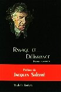

Ressources en Développement
Les psychologues humanistes
Ravage et... Délivrance
Poèmes humanistes
|
 |
ReD éditeur, 2000 ISBN 2-921693-54-2 88 pages, 16.00 $Can (nouveau prix) |
à l'émotion permise, à oser traverser la criante faim de ne pouvoir se dire,
à emprunter à votre façon tel ou tel poème pour l'offrir à votre mémoire
au-delà des murmures du silence et bâtir ainsi votre propre parole"
Jacques Salomé, mai 2000 en Provence
Poèmes humanistes
Le psychothérapeute bénéficie d'un accès privilégié aux drames humains les plus importants ainsi qu'aux recoins obscurs de la psyché et de la sensibilité.
C'est souvent le langage imagé de la poésie qui semble le plus approprié pour rendre avec justesse les nuances, les subtilités, les éclats et l'intensité des drames humains que le travail quotidien l'amène à partager.
Michelle Larivey utilise parfois son talent de poète pour mieux exprimer sa compréhension de certaines situations qui, malgré leur caractère tragique, correspondent souvent à des moments de plénitude.
Préface de Jacques Salomé
Les filles d'Aphrodite
inspiré par l'attitude des femmes intouchables et leur effet sur certains hommes
Le ravage
inspiré par des victimes d'accidents de travail
S'extraire de l'abîme
inspiré par l'expérience des travailleurs accidentés en psychothérapie de groupe
L'envolée
inspiré parl'expérience des travailleurs accidentés en psychothérapie de groupe
Arrimés au creux de la vague
inspiré par les personnes souffrant de stress post-traumatique
Nos pères: leur paix si chère!
inspiré par ce que vivent les hommes qui renoncent, petit à petit à se respecter avec les femmes
qu'ils aiment
Coeur rauque
inspiré par ce que vivent des psychothérapeutes en intervention post-traumatique
L'homme écalé
inspiré par la conquête du droit d'être différent
L'homme sans voix
inspiré par ceux qui doivent arracher leur droit d'être vivant à une enfance de restrictions
Noeuds d'aigles
inspiré par des personnes aux prises avec des phobies
Chavirement
inspiré par les gens qui font des crises d'anxiété ou de panique
Deuil d'elle
inspiré par celui qui se retrouve seul après la longue lutte pour la vie de l'être aimé
Sur le chemin du deuil
inspiré par une phase de la démarche du deuil
Coupure
inspiré par la difficulté de consentir à la perte d'un être cher
L'homme perle
inspiré par l'attitude des hommes québécois à l'égard des femmes
Labyrinthe
inspiré par les personnes dont la sécurité repose sur le contrôle total de leurs émotions
L'enfant aux miettes
inspiré par les enfants issus de mère indisponible
L'oiseau pourpre
inspiré par celui qui éteint l'autre pour éviter son impact
L'abattage des oiseaux de feu
inspiré par les êtres de valeur qu'on exploite à leur insu en les attirant sous prétexte
de tâches nobles
Pauvres furies
inspiré par l'étouffement perpétuel des colères légitimes
Marée chaude
inspiré par l'amour impossible
Les filles de Mules
inspiré par les femmes qui refusent leur vulnérabilité avec les hommes
Fleur d'artichaut
inspiré par la difficulté de contact de l'adolescence
La complainte d'un humaniste
inspiré par les tourments et l'incertitude du psychothérapeute qui a renoncé au purisme
de l'humanisme.
Le mal de l'autre
inspiré par l'insoutenable oscillation vécue par des personnes dans la relation thérapeutique
Les âmes brûlées
inspiré par les divorces où l'enfant est pris en otage
Ode à un chef
inspiré par l'entreprise de réorganisation menée par le chef d'une grande entreprise
Nos amours
inspiré par la recherche de fusion et celle du contact réel
Les lacs aussi meurent
inspiré par l'appréhension des personnes intimement liées à l'idée d'être séparées
Délivrance
inspiré par celle qui rompt après avoir tout tenté pour résoudre ses impasses

Choisissez l'option qui vous convient